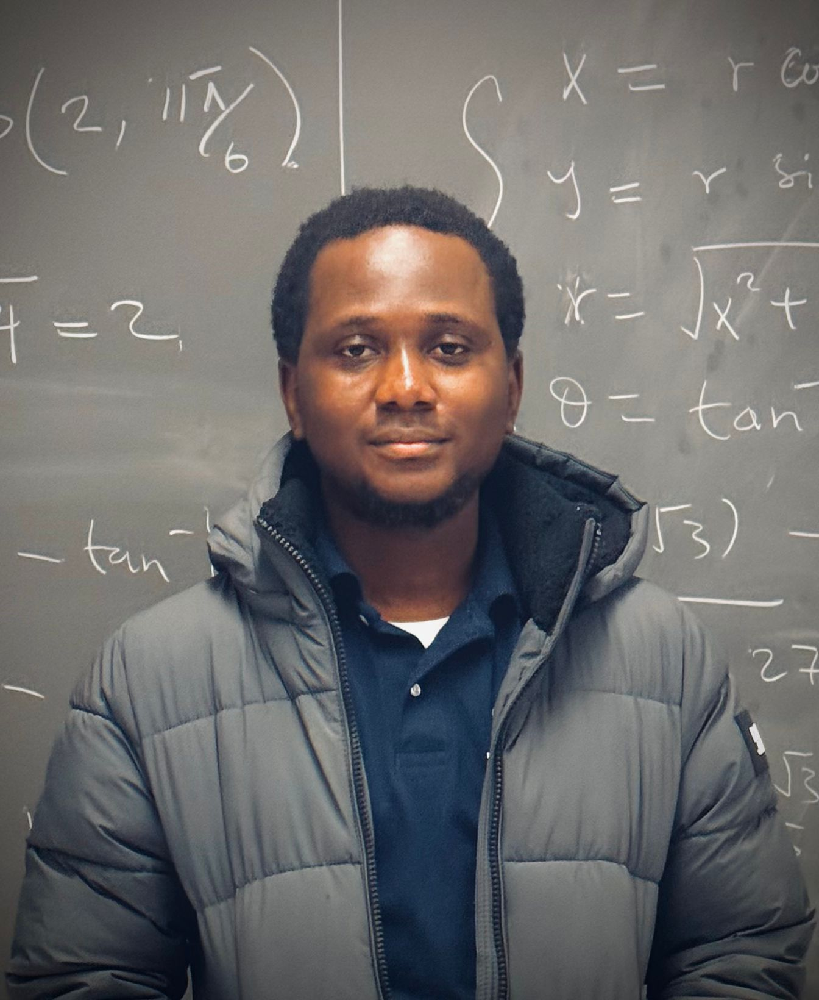
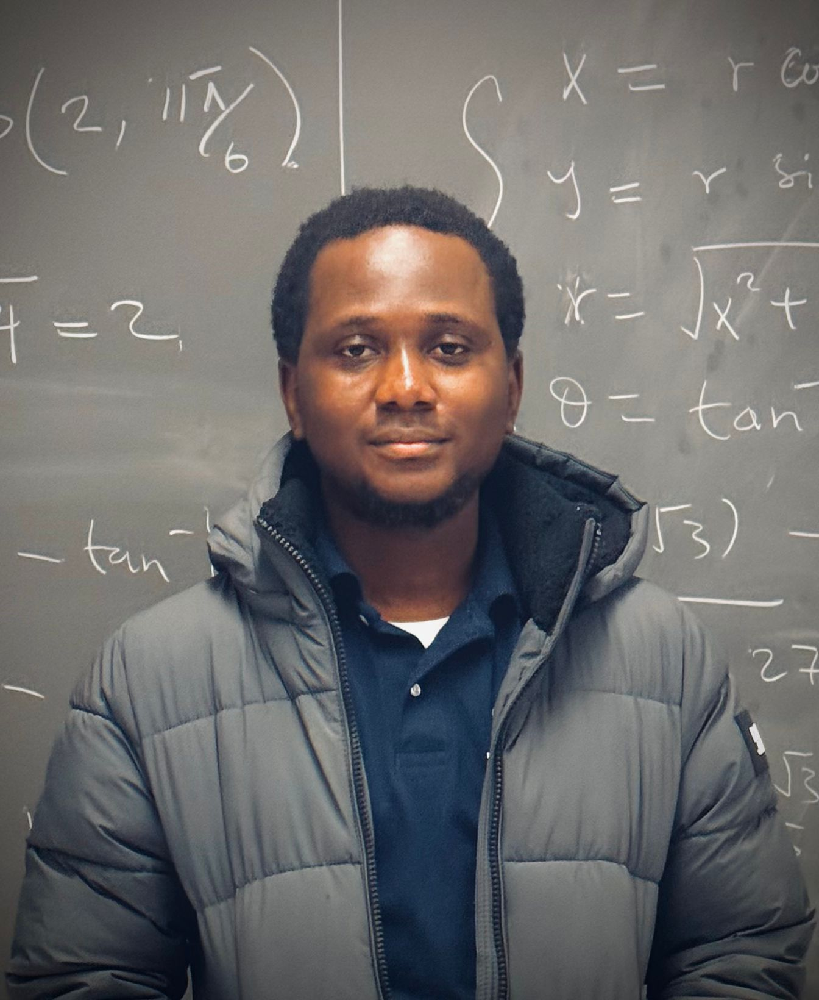

I leverage on the power of numerical analysis, cutting-edge web technologies, and machine learning to develop projects that stand at the intersection of theory and practice.
I'm a Ph.D. student in Applied Mathematics at the University of Delaware with expertise in machine learning, numerical analysis, and computer vision. Passionate about solving complex problems, I bring hands-on experience in programming, image processing, and algorithm development, alongside a strong commitment to continuous learning and impactful collaboration.